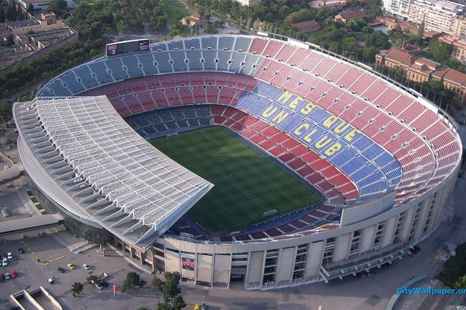

Az FC Barcelona, röviden Barca, Spanyolország egyik legismertebb és legsikeresebb labdarúgóklubja. A klubot 1899-ben alapították Barcelonában, és azóta a világ egyik legnépszerűbb futballcsapatává vált. A klub színe a gránátvörös és a kék, és híres a támadó stílusáról, valamint a saját nevelésű játékosokra épülő filozófiájáról. A klub stadionja a Camp Nou, amely Európa egyik legnagyobb stadionja. A Barca egyik legismertebb mottója a „Més que un club” (Több mint egy klub), amely a klub társadalmi és kulturális jelentőségét is hangsúlyozza.
A klub története 1899-ben kezdődött, amikor a svájci Joan Gamper a Los Deportes újságban hirdetést adott fel, hogy futballcsapatot szervezzen. November 29-én a Gimnasio Soléban tartott ülésen megszületett a Futbol Club Barcelona, és a tagok az ikonikus gránátvörös-kék mezszíneket választották. Gamper nemcsak alapítóként, hanem játékosként és később elnökként is meghatározó alakja lett a csapatnak, aki pénzügyi válságok idején is többször megmentette a klubot. A Barcelona az első évtizedeiben gyorsan fejlődött, megszerezte első katalán és spanyol kupagyőzelmeit, a 1920-as évekre pedig felépítette az első saját stadionját, a Les Cortsot. Ebben az időszakban olyan korai legendák léptek pályára, mint a fantasztikus góllövő Paulino Alcántara és a korszak közönségkedvence, Josep Samitier.
A 1930-as évek végén kitört spanyol polgárháború és Franco tábornok diktatúrája súlyos politikai és társadalmi csapást mért a klubra. A katalán szimbólumokat és nyelvet szigorúan elnyomták, a klub nevét a spanyolosított Club de Fútbol Barcelonára kellett változtatni, és a katalán zászlót képviselő sávokat is eltávolították a címerből. Ezenkívül 1936-ban a fasiszta csapatok meggyilkolták a klub akkori elnökét, Josep Sunyolt, ami mély nyomot hagyott a közösségben. A nehézségek és az elnyomás ellenére a csapat a pályán fennmaradt, a szurkolók számára pedig a meccsek jelentették az egyetlen helyet, ahol kinyilváníthatták identitásukat. Az 1940-es évek végén a csapat az egymás után megszerzett bajnoki címekkel újra elindult a felemelkedés útján.
A klub első igazi aranykora a magyar futball-legenda, Kubala László 1950-es érkezésével vette kezdetét. Kubala lenyűgöző játéka, fizikai ereje és zseniális technikai megoldásai révén a Barça az 1951–1952-es szezonban mind az öt elérhető trófeát megnyerte, megalapozva az „Öt Kupa Csapata” (El Barça de les Cinc Copes) legendáját. Olyan hatalmas volt az érdeklődés a mérkőzések iránt, hogy a Les Corts stadion gyorsan kicsinek bizonyult, a szurkolók egyszerűen nem fértek be a lelátókra. Ezért a vezetőség elhatározta egy új, gigantikus létesítmény megépítését: a ma is ikonikus Camp Nou stadiont 1957 szeptemberében adták át, amely a klub növekedésének új szimbólumává vált.
1973-ban a holland sztár, Johan Cruyff érkezett a csapathoz, aki nemcsak játékosként vezetett el a bajnoki címig, hanem később edzőként is alapjaiban változtatta meg a klub filozófiáját. Cruyff az 1980-as évek végén vette át az irányítást a kispadon, és felépítette a La Masia akadémia alapjaira épülő támadó szellemiségű játékrendszert. Megalakította a legendás „Dream Team-et”, amelynek tagja volt többek között Michael Laudrup, Hristo Stoichkov, Ronald Koeman és a fiatal Pep Guardiola. Ez a csapat zsinórban négy bajnoki címet nyert, 1992-ben pedig a londoni Wembley Stadionban, Koeman felejthetetlen szabadrúgásgóljával megszerezte a klub történetének első Bajnokcsapatok Európa-kupája (BEK) trófeáját.
A kétezres évek elejének trófeanélküli évei után Joan Laporta elnöksége és Ronaldinho 2003-as igazolása hozott új lendületet és örömöt a Camp Nouba. Frank Rijkaard vezetésével a csapat 2006-ban Párizsban, az Arsenal legyőzésével ismét felült Európa trónjára. Az igazi korszakalkotó sikereket azonban Pep Guardiola kinevezése hozta meg 2008-ban. A saját nevelésű fiatalokra (többek között Lionel Messi, Xavi, Andrés Iniesta, Sergio Busquets) és a látványos tiki-taka passzjátékra építő csapat 2009-ben történelmi hat trófeát nyert egyetlen naptári év alatt. 2015-ben, a Messi, Suárez és Neymar alkotta megállíthatatlan „MSN” csatártrióval, Luis Enrique irányításával a klub másodszor is elérte a triplázást (bajnokság, kupa, Bajnokok Ligája).
A 2010-es évek végére felhalmozódott pénzügyi nehézségek, a magas bérköltségek és a hibás átigazolási politika végül súlyos válsághoz vezettek. Ennek legfájóbb pontjaként 2021-ben a klub a La Liga szigorú pénzügyi szabályai miatt elhagyni kényszerült legnagyobb legendáját és történetének legeredményesebb játékosát, Lionel Messit. Az ismét elnökké választott Joan Laporta, valamint a klub korábbi ikonikus játékosai és edzői (például Xavi, majd őt követően Hansi Flick) vezetésével a Barcelona komoly szerkezeti és pénzügyi átalakításba kezdett. A csapat fókuszába újra a híres akadémia, a La Masia fiatal tehetségei (mint Lamine Yamal, Gavi vagy Pedri) kerültek, miközben a Camp Nou átfogó modernizáción és felújításon esik át, hogy a klub stabil alapokon térhessen vissza a világ legszűkebb elitjébe.
További információk: FC Barcelona történelem
Sikerek: FC Barcelona sikerei
Jelenlegi csapat: FC Barcelona jelenlegi csapata